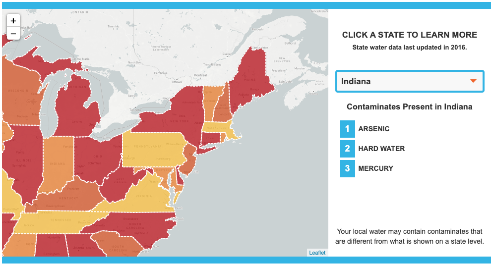
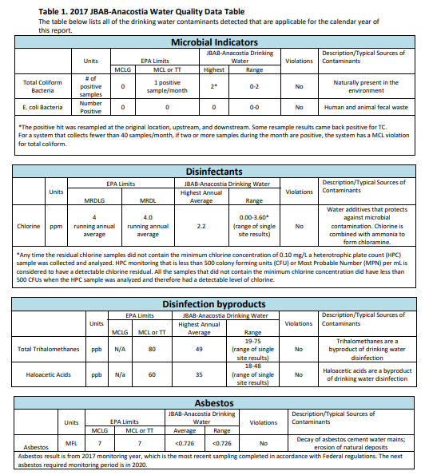
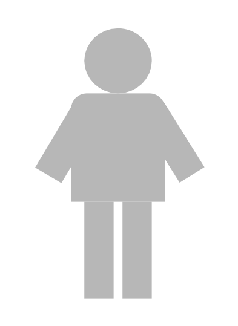

Being aware of the contaminants that are in your tap water is very important! Treatment of tap water in the United States is very local and it is one’s responsibility to be aware of how their community is treating tap water. Explore the different links below to learn more about your tap water quality, how water is treated in the United States, and common solutions and misconceptions!
Top Water Contaminants in your State
Want to what the most prevalent contaminants are in your state? Pentair Pelican has an interactive map that provides you with the top three contaminants are in each state and information about them!
Local Water Reports
Each year, the Environmental Protection Agency (EPA) releases a report that evaluates the quality of water from your local water supplier. You can access the reports or call a representative by clicking here this website!
Solutions and Misconceptions
Poor quality of tap water is a very prevalent problem in the United States. Therefore, there are many companies that will try to take advantage of this fear to sell you products that are advertised to provide “clean water” such as water bottles and water filters. However, that might not always be the case. Click here to learn more about viable solutions to improve the quality of your tap water.
Learn more about Water in the United States
Drinking water is regulated in many different ways in the United States. In order to take care of our bodies, it is important to learn more about the organizations that treat and regulate the water we consume.
Water Quality Differences Across the Nation
The quality of your drinking water differs drastically depending on where you live, how much money you earn, and your race or ethnicity! Click here to learn more .
